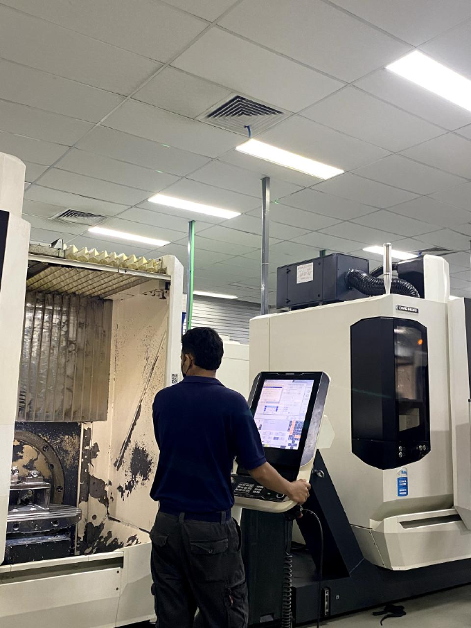
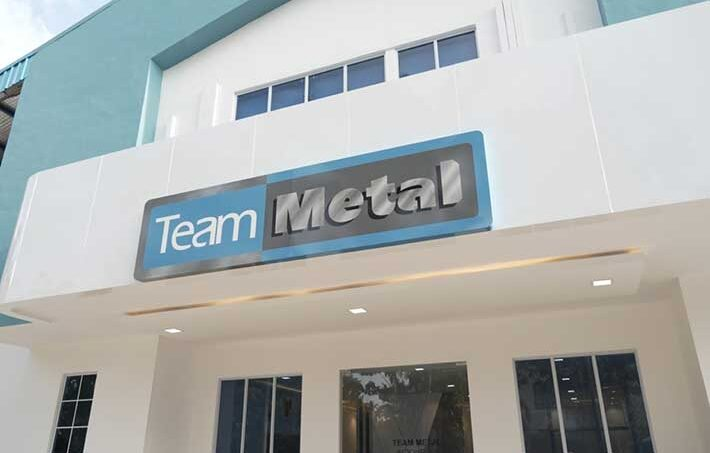
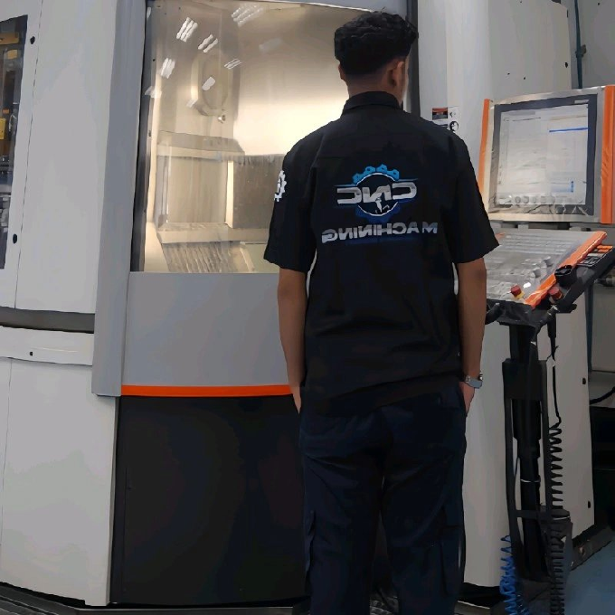
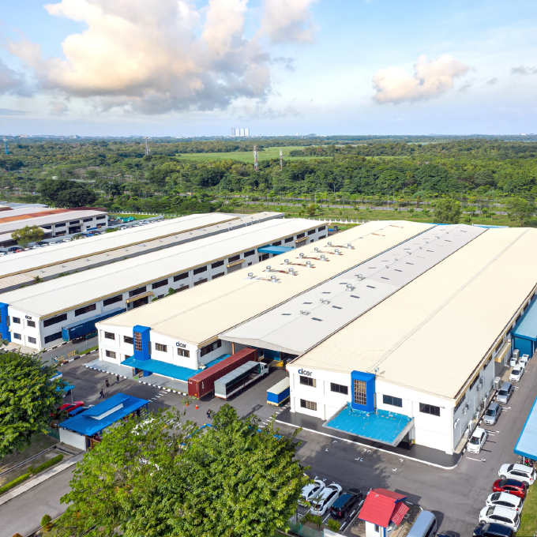
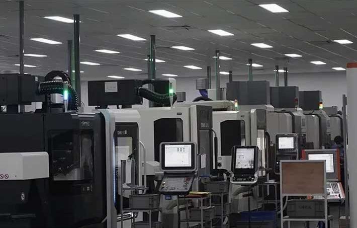

4+ Tahun Pengalaman di Precision Manufacturing | GD&T & Tooling | Terbuka untuk Peluang

CNC Machining & Tooling Specialist dengan pengalaman hands-on di industri precision manufacturing

CNC Machining & Tooling Specialist dengan 4+ tahun pengalaman hands-on di precision manufacturing di industri Singapura dan Indonesia. Saat ini menjabat sebagai Tooling Junior Technician di Cicor Group, di mana saya berkontribusi dalam mengoptimasi proses CNC milling — mengurangi waktu siklus produksi hingga 15% — sambil mempertahankan standar kualitas yang ketat sesuai ISO 9001.
Sebelumnya sebagai CNC Machinist di Team Metal (S) Pte Ltd (hampir 3 tahun), saya secara konsisten memberikan akurasi dimensi 100% melalui penguasaan GD&T dan operasi CNC presisi.
Perjalanan profesional saya di industri precision manufacturing
Cicor Group - Batam, Indonesia
Team Metal (S) Pte Ltd - Batam, Indonesia
Team Metal (S) Pte Ltd - Batam, Indonesia
Keterampilan dan sertifikasi yang saya miliki di bidang CNC machining
Sertifikasi GD&T Fundamental
Manajemen Risiko Konstruksi
Problem Solving Techniques
Dasar-dasar Manajemen Operasi
Pemrograman CAM dengan Mastercam
Teknologi / Teknisi Teknik Otomotif | 2017 - 2020
Foto-foto dari tempat kerja dan aktivitas sehari-hari



Terbuka untuk peluang on-site, hybrid, atau relokasi di industri manufacturing & precision engineering
+62 822-6080-6312
linkedin.com/in/daudkristian
daudkristianmanalu@gmail.com
Batam, Kepulauan Riau, Indonesia